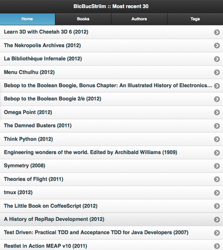
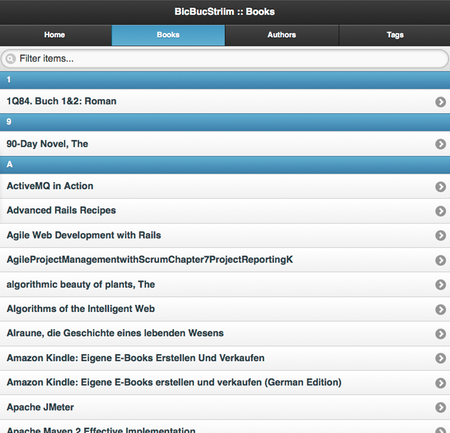
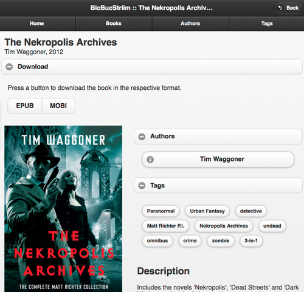
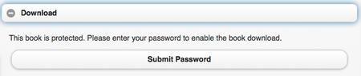

BicBucStriim streams books, digital books. It fills a gap in the functionality of current NAS devices that provide access to music, videos and photos -- but not books. BicBucStriim fills this gap and provides web-based access to your e-book collection.
View the Project on GitHub rvolz/BicBucStriim
Download the current installation archive(ZIP, Version 0.7.0)
BicBucStriim streams books, digital books. It fills a gap in the functionality of current NAS devices that provide access to music, videos and photos -- but not books. BicBucStriim fills this gap and provides web-based access to your e-book collection.
BicBucStriim was created when I bought a NAS device (Synology DS 512+) to store my media on it. NAS devices like the Synology DS typically include media servers that publish audio, video, photos, so that you can access your media from all kinds of devices (TV, smart phone, laptop ...) inside the house, which is very convenient. Unfortunately there is nothing like that for e-books. So BicBucStriim was created.
BicBucStriim is a simple PHP application that runs in the Apache/PHP environment provided by the NAS. It assumes that you manage your e-book collection with Calibre. The application reads the Calibre data and publishes it in HTML form. To access the e-book catalog you simply point your ebook reader to your NAS, select one of your e-books and download it.
BicBucStriim is intended for in-house usage, on a NAS or a similar device without much memory and processing power. On a PC you could simply use the Content Server built into Calibre.
If you are looking for a possibility to publish a larger book collection, or want to publish on the Internet, then calibre2opds might be interesting. It generates a static HTML catalog of a Calibre library that then can be transferred to a web server.
BicBucStriim is still under development. Version 0.7.0 of BicBucStriim:
BicBucStriim just displays what is stored in your Calibre library. The start page lists the 30 most recent books in your library, assuming that they are new and therefore need to be read:

In addition the main menu shows three ways to navigate through your library, by book title (books), author name (authors) and tag (tags). All three sections work in the same way, you either scroll through the listing or filter/search by entering something in the search bar at the top.

Once a book is selected, the app shows a details page with title, author information, tags and the book description. In the download section of that page there are download links for all book formats stored in the Calibre library. Click on a link and the book file will be immediately sent to your device.

The easy way assumes that BicBucStriim lives right below the web root of your device and can be addressed like http://<your ip>/bbs/:
chmod ga+w logsConfiguration is easy. Just copy the file config.php.template to config.php and edit the latter with the text editor of your choice.
BicBucStriim needs to know where you Calibre library directory resides, the full path to the folder that contains your metadata.db and the book directories. In my case that is /volume1/books/ so the configuration entry looks like:
$calibre_dir = '/volume1/books';
That is all you need to do to get BicBucStriim running. Save and close the file, start your web browser and navigate to http://<address of your NAS>/bbs/. The index page should appear.
BicBucStriim is a personal application and assumes that it is running in a safe environment. The emphasis is on conveniency in your home LAN, so there is not much security built in. However, for situations where parental control, or something like that, is necessary, we have the download protection. When activated users need a password to download book files. By default downloads are not protected.
To switch the download protection on, open config.php again and set the toggle for this feature to true:
$glob_dl_toggle = true;
Then enter a suitable password:
$glob_dl_password = '7094e7dc2feb759758884333c2f4a6bdc9a16bb2';
That's it. (To turn it off again just set the toggle to false.) The download links will now only appear if the valid password was entered:

BicBucStriim itself is licensed under the MIT license, for the licenses of the libraries used see the file NOTICE.
(The MIT License)
Copyright (c) 2012 Rainer Volz
Permission is hereby granted, free of charge, to any person obtaining a copy of this software and associated documentation files (the 'Software'), to deal in the Software without restriction, including without limitation the rights to use, copy, modify, merge, publish, distribute, sublicense, and/or sell copies of the Software, and to permit persons to whom the Software is furnished to do so, subject to the following conditions:
The above copyright notice and this permission notice shall be included in all copies or substantial portions of the Software.
THE SOFTWARE IS PROVIDED 'AS IS', WITHOUT WARRANTY OF ANY KIND, EXPRESS OR IMPLIED, INCLUDING BUT NOT LIMITED TO THE WARRANTIES OF MERCHANTABILITY, FITNESS FOR A PARTICULAR PURPOSE AND NONINFRINGEMENT. IN NO EVENT SHALL THE AUTHORS OR COPYRIGHT HOLDERS BE LIABLE FOR ANY CLAIM, DAMAGES OR OTHER LIABILITY, WHETHER IN AN ACTION OF CONTRACT, TORT OR OTHERWISE, ARISING FROM, OUT OF OR IN CONNECTION WITH THE SOFTWARE OR THE USE OR OTHER DEALINGS IN THE SOFTWARE.